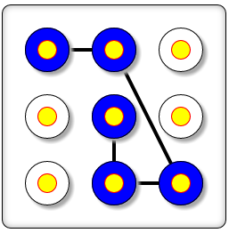

<div  class="home post-list-wrapper">

  <h1 class="page-heading">Posts</h1>

  <ul class="post-list">
    {% for post in paginator.posts %}
      <li>
        <h2>
          <a class="post-link" href="{{ post.url | prepend: site.baseurl }}">{{ post.title }}</a>
        </h2>
        <span class="post-meta">{{ post.date | date: "%b %-d, %Y" }}</span>
        <div class="content">
          {{ post.excerpt }}
        </div>
      </li>
    {% endfor %}
  </ul>

</div>

<div class="project-list-wrapper">
  <h1 class="page-heading">Projects</h1>
  <ul class="project-list">
    <li>
      <h3><a href="{{site.baseurl}}/patternlock/">jQuery Pattern Lock plugin</a></h3>
      
      <p>This is browser based pattern lock plugin similar to Pattern locks available in Android/iOS.</p>
    </li>
  </ul>
</div>

<!-- Pagination links -->
<div class="pagination post-list-wrapper">
  {% if paginator.previous_page %}
    <a href="{{ paginator.previous_page_path }}" class="previous">Previous</a>
  {% else %}
    <span class="previous">Previous</span>
  {% endif %}
  <span class="page_number ">Page: {{ paginator.page }} of {{ paginator.total_pages }}</span>
  {% if paginator.next_page %}
    <a href="{{ paginator.next_page_path }}" class="next">Next</a>
  {% else %}
    <span class="next ">Next</span>
  {% endif %}
</div>